第03讲 数轴
第03讲 数轴

课程标准 | 学习目标 |
①理解数轴的定义 ②会画数轴，并在数轴表示数 | 1．理解数轴的概念，并能正确画出数轴,，在数轴上表示数； 2．通过数轴与有理数是相互对应的，初步培养学生数学结合思想； |


知识点01 数轴的概念
1.概念：规定了原点、正方向、单位长度的直线叫做数轴.
三要素：原点、正方向、单位长度
2.对应关系：数轴上的点和有理数是一一对应的.
【即学即练1】
1．（23-24七年级上·内蒙古巴彦淖尔·阶段练习）下列所示数轴正确的是（ ）
A． B．
B．
C． D．
D．
【答案】D
【分析】本题考查的是数轴，熟知规定了原点、正方向、单位长度的直线叫做数轴是解答此题的关键．根据数轴的特点进行解答即可．
【详解】解∶ A、没有正方向，故本选项错误；
B、没有单位长度，故本选项错误；
C、单位长度不一致，故本选项错误；
D、有原点、正方向、单位长度，故本选项正确；
故选∶D．
知识点02 数轴的应用
1.应用 ：（1）比较大小：在数轴上，右边的数总比左边的数大 .
（2）求两点之间的距离：两点在原点的同侧作减法，在原点的两侧作加法.
【即学即练1】
1．（23-24七年级上·浙江台州·期末）如图的数轴上，每小格的宽度相等．
(1)填空：数轴上点 表示的数是______，点
表示的数是______，点 表示的数是______．
表示的数是______．
(2)点 表示的数是
表示的数是 ，点
，点 表示的数是
表示的数是 ，请在数轴上分别画出点和点的位置．
，请在数轴上分别画出点和点的位置．
(3)将 四个点所表示的数按从大到小的顺序排列，用“
四个点所表示的数按从大到小的顺序排列，用“ ”连接．
”连接．
【答案】(1)
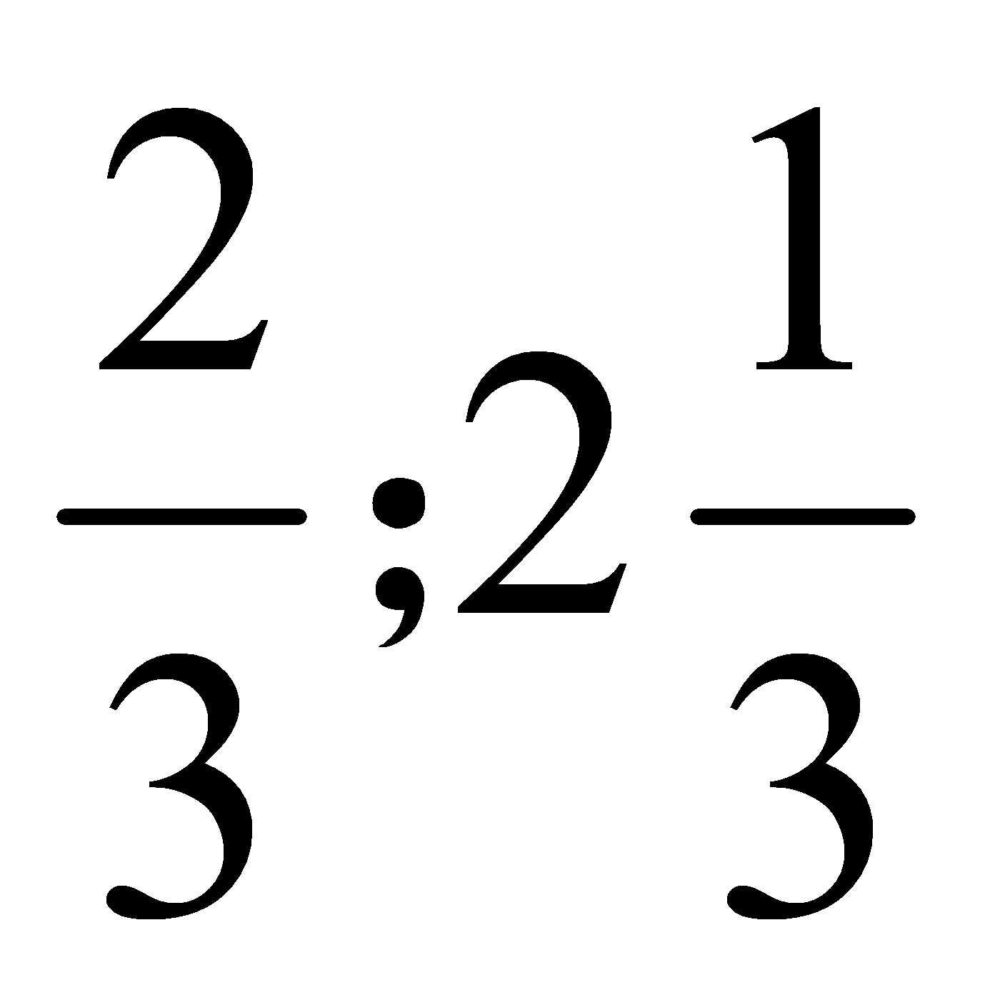
(2)见解析
(3)
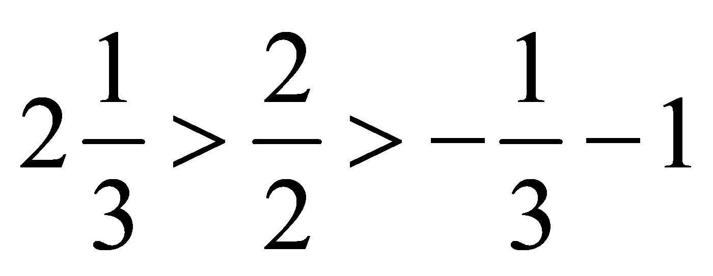
【分析】本题主要考查了数轴上的数，比较有理数的大小，理解两个整数之间的单位长度是解题的关键．
（1）观察数轴可得答案；
（2）根据单位长度，在数轴上表示两个数即可；
（3）根据数轴上的位置得出答案．
【详解】（1）解：点A表示的数是
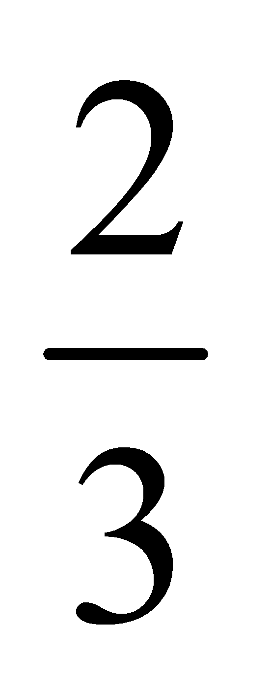
，点B表示的数是 ，
，故答案为：，；
（2）解：如图，
；
（3）解：由数轴知：．

题型一 数轴的三要素及其画法
【典例1】（24-25七年级上·全国·假期作业）下列图形中是数轴的是（ ）
A． B．
B．
C． D．
【答案】C
【分析】本题主要考查数轴的概念，熟练掌握数轴的三要素：正方向，原点，单位长度，是解题的关键．
根据数轴的三要素：正方向，原点，单位长度，逐一判断选项，即可．
【详解】A中的没有单位长度，错误；
B中没有正方向，错误；
C中满足原点，正方向，单位长度，正确；
D中没有原点，错误．
故选C．
【变式1】（23-24七年级上·广西来宾·期中）下列选项中，数轴表示正确的是（ ）
A． B．
B．
C． D．
D．
【答案】D
【分析】根据数轴的特点进行解答即可．
【详解】 、数轴无原点，此选项不符合题意；
、数轴无原点，此选项不符合题意；
 、数轴位长度不统一，此选项不符合题意；
、数轴位长度不统一，此选项不符合题意；
 、数轴方向不统一，此选项不符合题意；
、数轴方向不统一，此选项不符合题意；
 、数轴表示正确，此选项符合题意；
、数轴表示正确，此选项符合题意；
故选：．
【点睛】此题考查了数轴三要素，熟知规定了原点、正方向、单位长度的直线叫做数轴是解题的关键．
【变式2】（23-24七年级上·广西百色·期末）下列数轴正确的是（ ）
A．
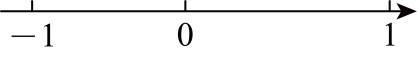
B．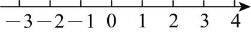
C． D．
D．
【答案】B
【分析】本题考查的是数轴．根据数轴定义：规定了正方向、原点、单位长度的直线叫做数轴，我们一般规定，数轴向右为正方向，单位长度必须一致，依据以上标准判断即可．
【详解】解：A、不正确，错误原因：数轴单位长度不一致；
B、正确；
C、不正确，错误原因：缺少正方向；
D、不正确，错误原因：缺少了原点．
故选：B．
【变式3】（23-24七年级上·湖南长沙·期中）下列数轴表示正确的是（ ）
A．
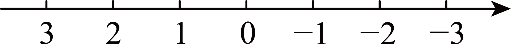
B．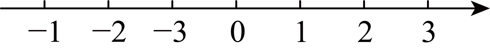
C．
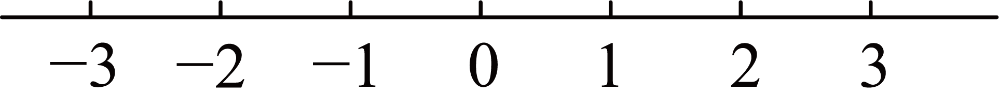
D．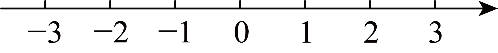
【答案】D
【分析】本题考查了数轴的认识，数轴的三要素：原点、正方向、单位长度，据此作答即可．
【详解】
解：A、 的正方向错了，故该选项是错误的；
B、 的数值标错了，故该选项是错误的；
C、 没有正方向，故该选项是错误的；
D、 原点、正方向、单位长度都正确，故该选项是正确的；
故选：D
题型二 用数轴上的点表示有理数
【典例2】（23-24七年级上·山西太原·阶段练习）已知一组数： ，
， ，
，
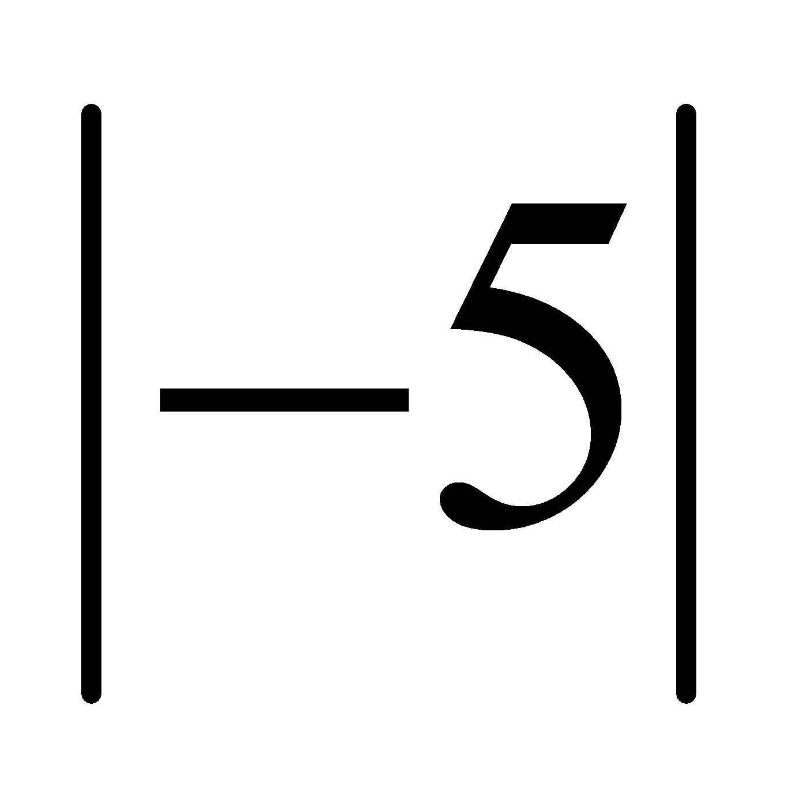
， ，
， ．
．
(1)把这些数在下面的数轴上表示出来：
(2)请将这些数按从小到大的顺序排列（用“ ”连接）．
”连接）．
【答案】(1)数轴见解析；
(2)
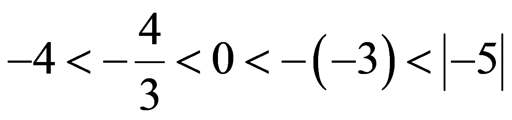
．【分析】本题考查的知识点是用数轴表示数、利用数轴比较有理数的大小，解题关键是准确将数在数轴上表示出来，注意符号．
（1）将数准确在数轴上表示出来，注意正负号；
（2）根据（1）中在数轴上表示的数，从左往右依次增大，用小于号连接即可．
【详解】（1）解： ，
，
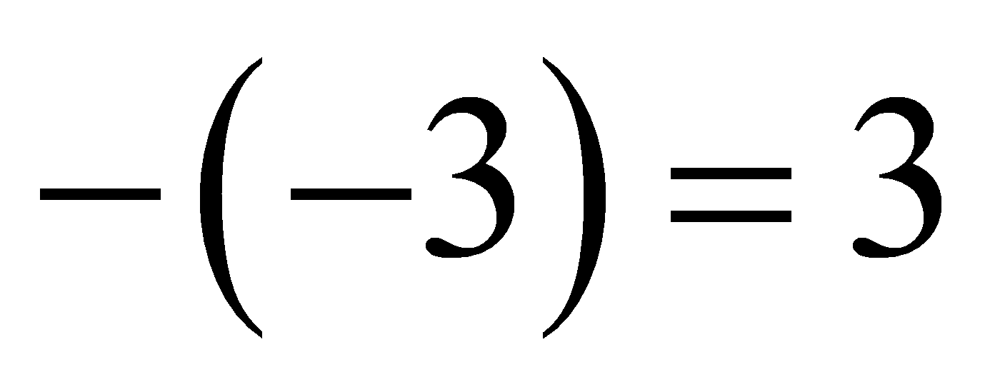
，这些数在数轴上的表示如下图所示：
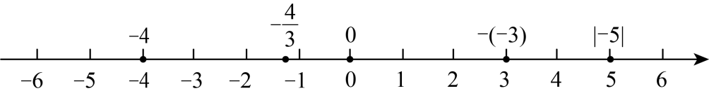
（2）解：由（1）中数轴得： ．
．
【变式1】（23-24七年级上·北京通州·期末）把下列各数： ，
， ，0，
，0， ，
， ，在数轴上表示出来，并用“＜”把它们连接起来．
，在数轴上表示出来，并用“＜”把它们连接起来．
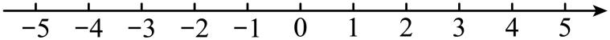
【答案】见解析
【分析】本题考查了利用数轴比较有理数的大小，先将每个数化简，然后表示在数轴上，再根据从左到右的顺序用“<”连接起来即可，准确在数轴上表示出来有理数是解题的关键．
【详解】解： ，
，
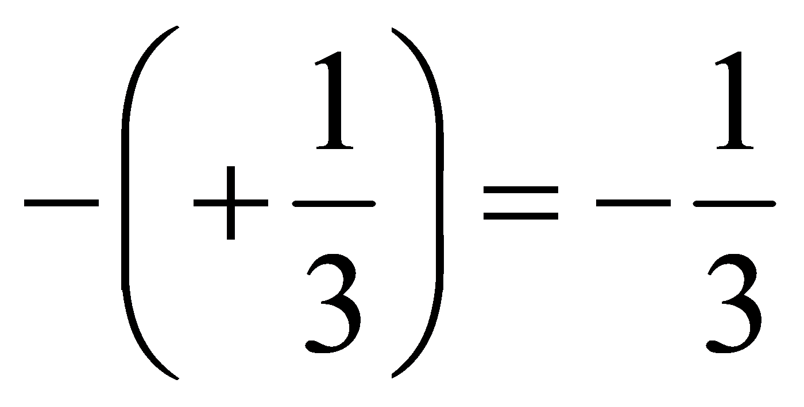
， ，
，
根据正数在原点右侧，负数在原点左侧，在数轴上的位置如图：
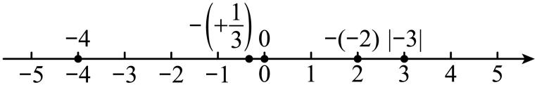
由数轴可得：
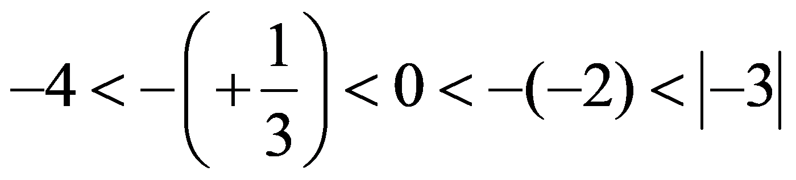
．【变式2】（23-24七年级上·江苏南通·阶段练习）把下列各数：
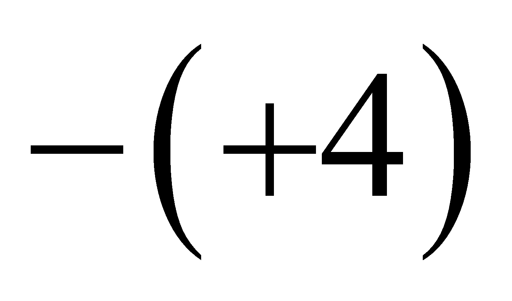
，，， ，
， ．
．(1)分别在数轴上表示出来，并把它们用“”连接起来．
(2)将上述的有理数填入图中对应的圈内．

【答案】(1)数轴上表示如图，
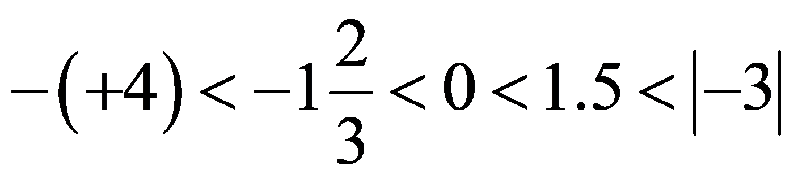
；(2)见解析．
【分析】（ ）根据有理数在数轴上对应的点，然后根据数轴即可比较大小；
）根据有理数在数轴上对应的点，然后根据数轴即可比较大小；
（ ）根据正数整数、负数的定义即可；
）根据正数整数、负数的定义即可；
本题考查了负数、整数和正数的意义及数轴，熟练掌握负数、整数、正数的意义和数轴是解题的关键．
【详解】（1）∵
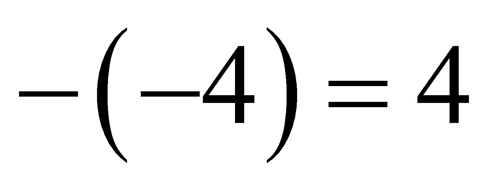
，，∴分别在数轴上表示出来，如图，
∴
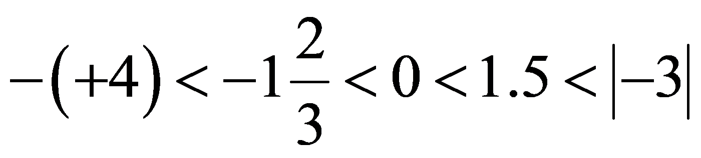
；（2）根据有理数的分类可得，
【变式3】（23-24七年级上·海南海口·期中）把下列各数： ，
，
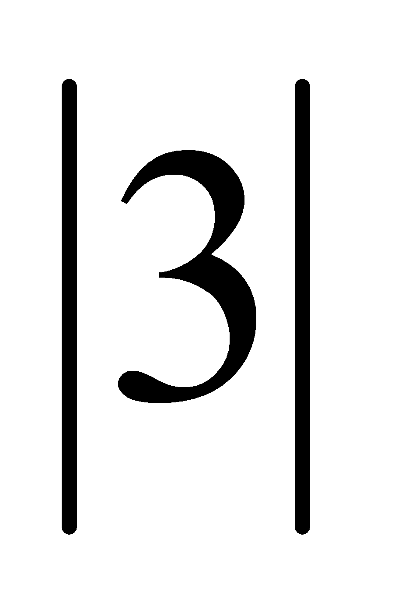
，0，，1.5， ．
．(1)分别在数轴上表示出来：

(2)将上述的有理数填入图中相应的圈内．
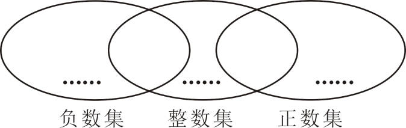
【答案】(1)见解析
(2)见解析
【分析】本题考查了数轴和有理数的分类：
（1）在数轴上描出各点即可；
（2）根据有理数的分类即可求解．
【详解】（1）解：
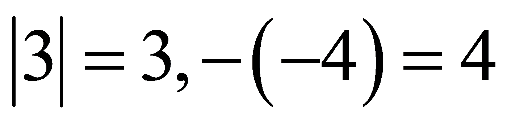
，如图所示：
（2）解：如图，
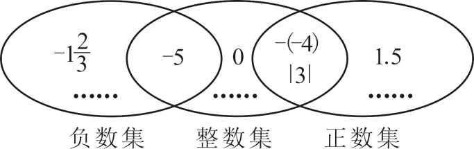
题型三 数轴上两点之间的距离
【典例3】 （23-24七年级上·广东佛山·期末）点A、B在数轴上对应的数分别为和5，则线段 的长度为 ．
的长度为 ．
【答案】9
【分析】本题考查数轴上两点间的距离，根据数a、b表示的两点间的距离为 求解即可．
求解即可．
【详解】解：点A、B在数轴上对应的数分别为和5，则线段的长度为
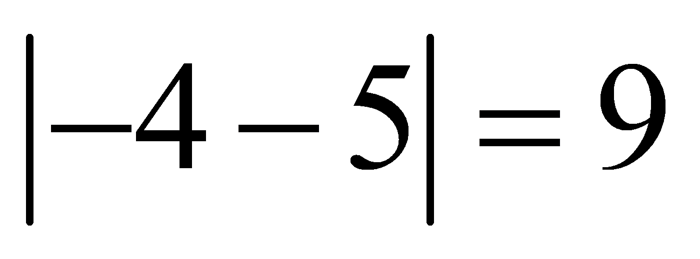
，故答案为：9．
【变式1】（2024·江苏徐州·二模）如图，数轴上A、B两点之间的距离为 ．
【答案】4
【分析】本题考查了数轴间的距离，根据A、B两点分别表示为
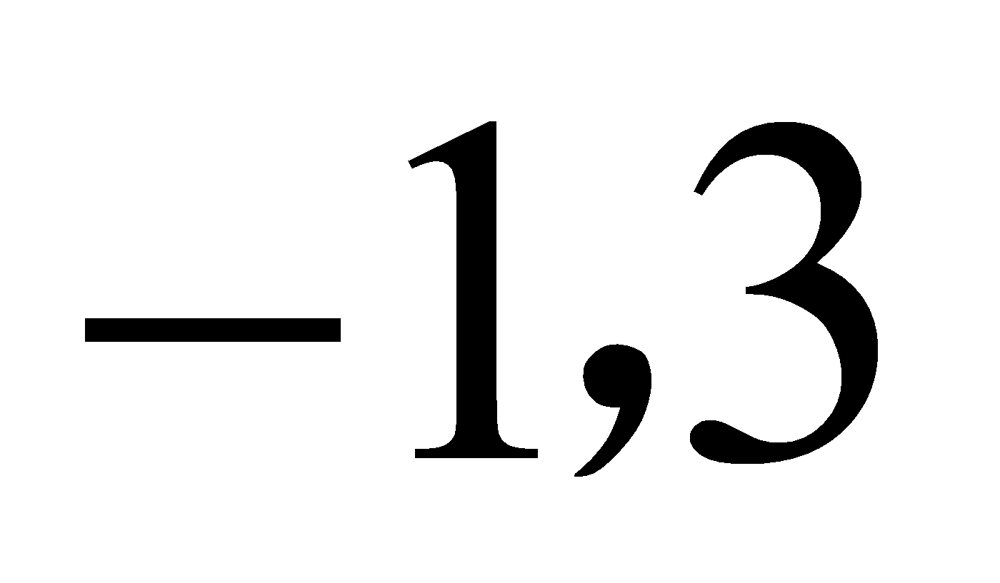
，再求出A、B两点之间的距离，即可作答．【详解】解：依题意，由数轴得出A、B两点分别表示为，
则 ，
，
∴数轴上A、B两点之间的距离为 ，
，
故答案为：4
【变式2】（23-24七年级上·重庆沙坪坝·期中）如图，在数轴上点A表示的数是 ，点B表示的数是5，点P在数轴上，若，则点P表示的数是 ．
，点B表示的数是5，点P在数轴上，若，则点P表示的数是 ．

【答案】1
【分析】本题考查数轴，首先分析出点P的位置，再进行计算即可．正确记忆数轴上的点的特征是解题关键．
【详解】解：在数轴上点A表示的数是，点B表示的数是5，
∴
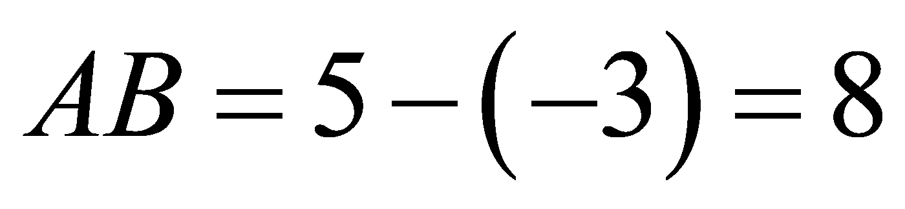
，由题意可知点P在线段之间，，
∴P到A点的距离为4，
∴P点表示的数为：1．
故答案为：1．
【变式3】（22-23七年级上·湖南衡阳·期末）已知数轴上两点A和B，点A表示数是1，点B与A相距3个单位长度，则点B表示的数是 ．
【答案】 或
或
【分析】本题考查了数轴上两点之间的距，一元一次方程的应用；设点 表示的数是
表示的数是 ，根据点的位置进行分类：①当点在点
，根据点的位置进行分类：①当点在点 的左侧时，②当点在点的右侧时，列方程求解即可；掌握“数轴上的两点之间的距离为右边点表示的数减去左边点表示的数．”是解题的关键．
的左侧时，②当点在点的右侧时，列方程求解即可；掌握“数轴上的两点之间的距离为右边点表示的数减去左边点表示的数．”是解题的关键．
【详解】解：设点表示的数是，
①当点在点的左侧时，
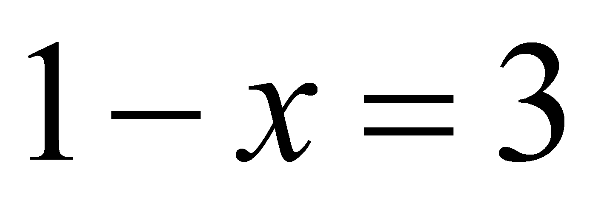
，解得： ，
，
所以此时点表示的数是；
②当点在点的右侧时，
 ，
，
解得： ，
，
所以此时点表示的数是；
故答案：或．
【变式4】（22-23七年级上·江西宜春·期中）在数轴上有P，M，N三点，点P在点M左侧，M，N两点所表示的数分别是1， ，点P到与点M，N其中一点距离等于点P到另一点距离的2倍，则满足条件的点P所表示的数是 ．
，点P到与点M，N其中一点距离等于点P到另一点距离的2倍，则满足条件的点P所表示的数是 ．
【答案】 ，
， 或
或
【分析】本题主要考查数轴的知识，解题的关键是利用掌握分类讨论思想，以及两点间的距离表示方法．
利用分类讨论思想，当点 在线段
在线段 上时且时，设点表示的数为
上时且时，设点表示的数为 ，用代数式表示出的长度，即可求出点所表示的数；当点在线段上时且时，用代数式表示出的长度，即可求出点所表示的数；当点运动到点
，用代数式表示出的长度，即可求出点所表示的数；当点在线段上时且时，用代数式表示出的长度，即可求出点所表示的数；当点运动到点 的左边时，那只有，用代数式表示出的长度，即可求出点所表示的数．
的左边时，那只有，用代数式表示出的长度，即可求出点所表示的数．
【详解】设点表示的数为，当点在线段上时且时，如图所示，
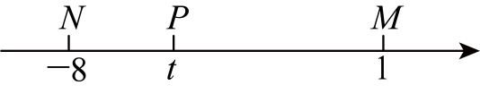
∵M，N两点所表示的数分别是1、，
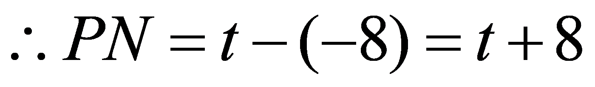
，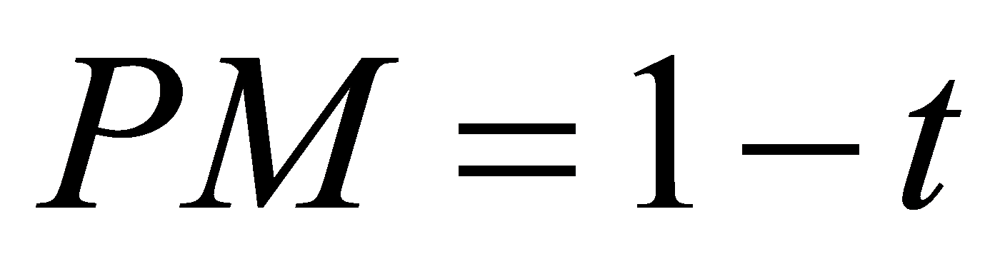
，，
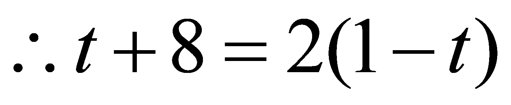
，解得：
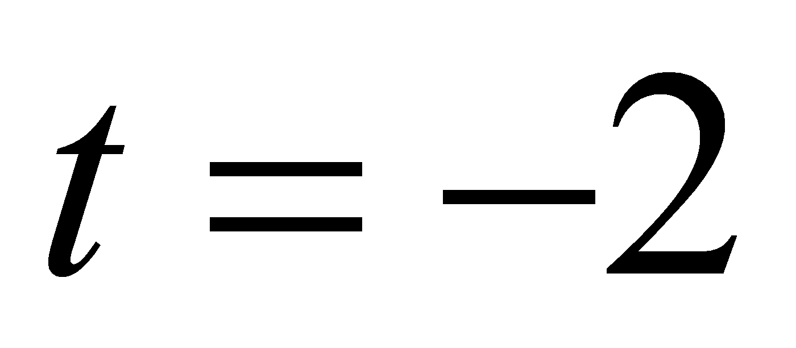
；当点在线段上时且时，如图所示，
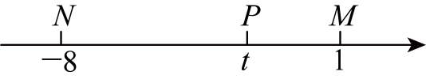
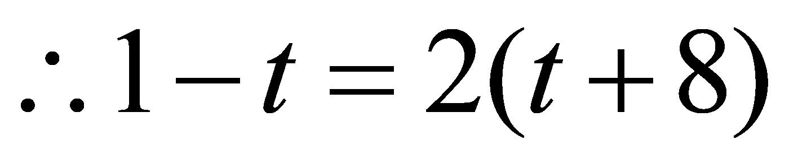
，解得：
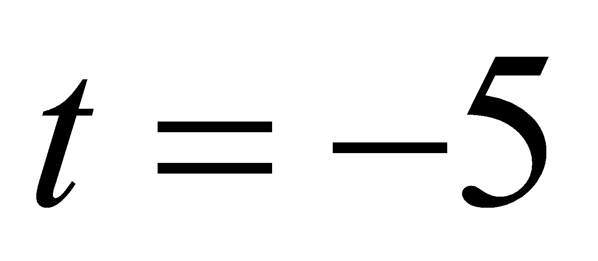
；当点运动到点的左边时，那只有，如图所示，
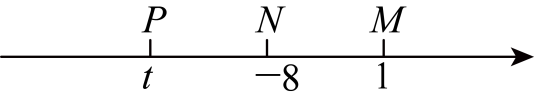
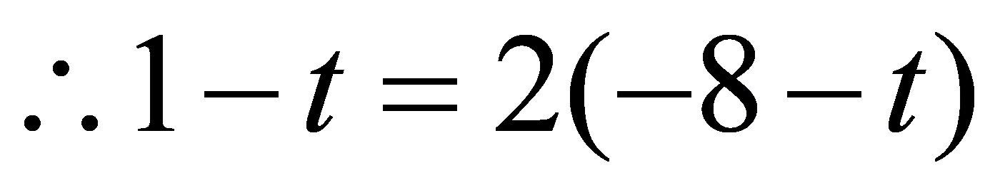
，解得：
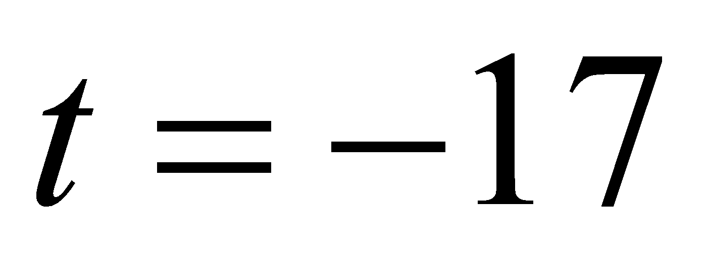
；故点表示的数为，或．
故答案为：，或．
题型四 利用数轴比较有理数的大小
【典例4】（23-24七年级上·江苏盐城·期末）如图，比较大小：a  ．（填“＞”“＜”“＝”）
．（填“＞”“＜”“＝”）

【答案】＜
【分析】本题考查了利用数轴进行比较大小，根据越在数轴的右边的数越大，即可作答．
【详解】解：由数轴可知

∴
故答案为：＜
【变式1】（23-24七年级上·山东青岛·期末） 两数在数轴上的位置如图所示，则
两数在数轴上的位置如图所示，则  （用“
（用“ ”“
”“ ”“
”“ ”填空）．
”填空）．
【答案】
【分析】本题主要考查数轴上比较大小，熟练掌握数轴的性质是解题的关键．根据数轴上比较大小即可得到答案．
【详解】解：根据在数轴的位置可知，
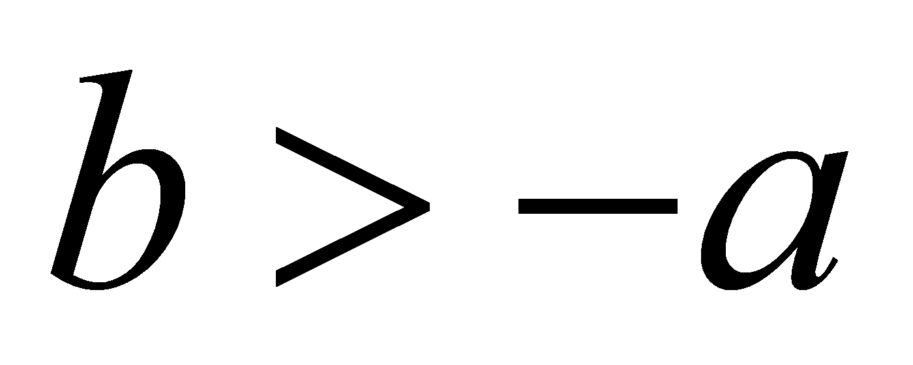
，故答案为：．
【变式2】（23-24七年级上·湖南衡阳·期末）如图，数轴上的两个点A、B所表示的数分别为a、b，比较大小：  ．（用“>”“<”或“=”号连接）
．（用“>”“<”或“=”号连接）
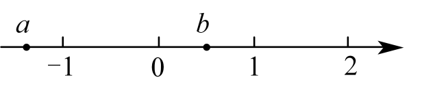
【答案】>
【分析】本题考查了数轴和有理数的大小比较，把、表示在数轴上，利用数形结合是解决本题比较简单的方法．
根据相反数的意义，把、先表示在数轴上，然后再利用数轴比较它们的大小即可．
【详解】解：根据相反数的意义，把、表示在数轴上，如图，
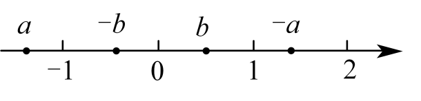
所以 ．
．
故答案为：>．
【变式3】（23-24七年级上·福建泉州·期末）有理数a，b，c在数轴上的位置如图所示，则
 （填“”“”或“”）．
（填“”“”或“”）．
【答案】
【分析】本题考查有理数的大小比较，以及数轴上两点之间的距离，根据数轴理解表示有理数a，b之间的距离，表示到原点之间的距离，由图即可判断与的大小．
【详解】解：由题知，可看作有理数a，b之间的距离，可看作到原点之间的距离，
由图知，a，b之间的距离大于到原点之间的距离，

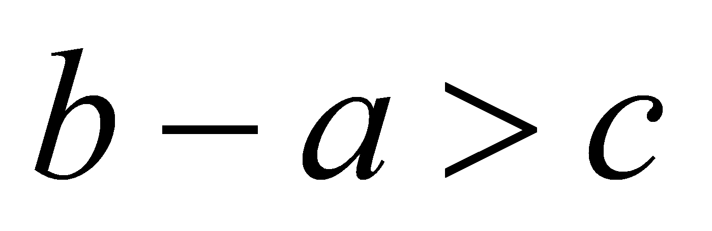
．故答案为：．
题型五 根据点在数轴的位置判断式子的正负
【典例5】 （2024·江苏徐州·二模）实数a、b在数轴上的位置如图所示，则下列结论正确的是（ ）

A． B． C．
B． C．  D．
D．
【答案】B
【分析】本题考查数轴上点表示的数，解题的关键是观察各点与原点的位置，确定各数符号及绝对值大小．
根据数轴上点与原点的位置，确定各数符号及绝对值大小即可得到答案．
【详解】解：由图可得： ，且
，且 ，
，
∴A、，故此选项不符合题意；
B、，故此选项符合题意；
C、，故此选项不符合题意；
D、
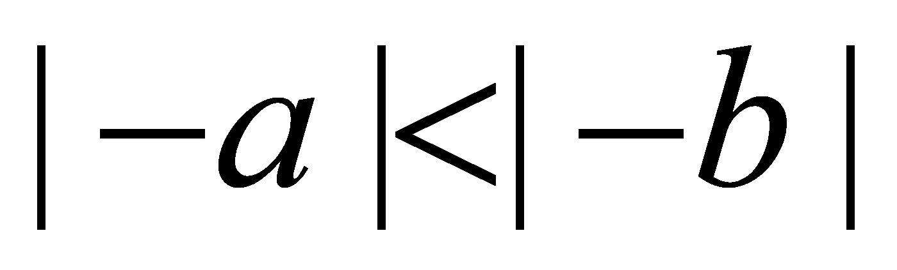
，故此选项不符合题意；故选：B．
【变式1】（23-24六年级下·黑龙江绥化·阶段练习）已知a、b、c三个数的位置如图所示，则下列结论不正确的是（ ）

A． B．
B． C．
C． D．
D．
【答案】C
【分析】本题考查了利用数轴上点对应的数确定代数式的符号，解答本题的关键是熟练掌握有理数的加法法则中对于符号的确定方法．同号两数相加，取与加数相同的符号，并把绝对值相加；绝对值不等的异号两数相加，取绝对值较大的加数的符号，并用较大的绝对值减去较小的绝对值；互为相反数相加得0；任何数与0相加仍得原数．
根据a、b、c三个数的位置，结合有理数的加法法则逐项分析即可．
【详解】解：∵从数轴可知： ，
， ，
，
∴A． ，
，
∴，正确，故本选项不符合题意；
B．∵，
∴，正确，故本选项不符合题意；
C．∵
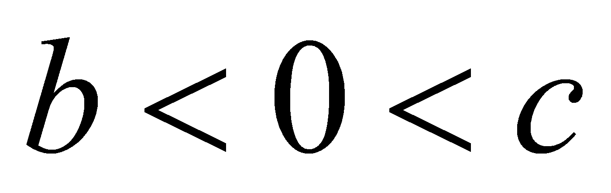
， ，
，∴ ，错误，故本选项符合题意；
，错误，故本选项符合题意；
D．∵
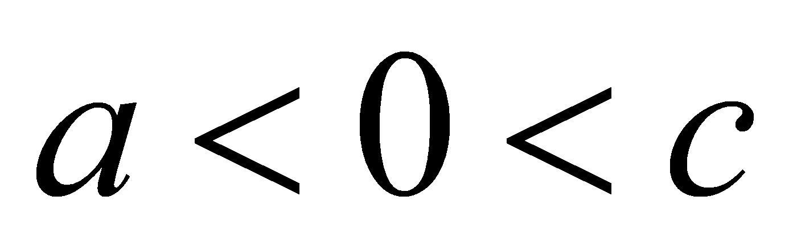
， ，
，∴，正确，故本选项不符合题意；
故选：C．
【变式2】（2023·陕西渭南·一模）实数 ，
， 在数轴上的位置如图所示，则
在数轴上的位置如图所示，则
 (填“
(填“ ”，“”或“
”，“”或“ ”)
”)

【答案】
【分析】根据数轴判断出距离原点的距离比距离原点的距离小，即可得出答案．
【详解】解：∵距离原点的距离比距离原点的距离小，
∴ ．
．
故答案为：．
【点睛】本题考查了有理数的大小比较，绝对值，掌握，在数轴上对应点的位置得出距离原点的距离比距离原点的距离小是关键．
【变式3】（23-24七年级上·重庆九龙坡·阶段练习）有理数a、b、c在数轴上的位置如图：

(1)先把“ ”表示在数轴上，再用“>”或“<”填空．
”表示在数轴上，再用“>”或“<”填空．
 ___________0，
___________0， ___________0，
___________0，
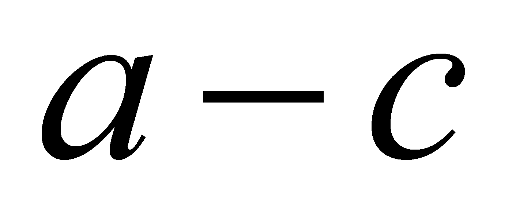
___________0．(2)用“<”将a、b、c、、 、
、 连接起来：___________．
连接起来：___________．
【答案】(1)见解析，>，<，>
(2)
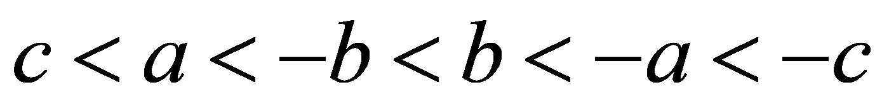
【分析】（1）现根据数轴上a、b、c的位置得到 ，
，
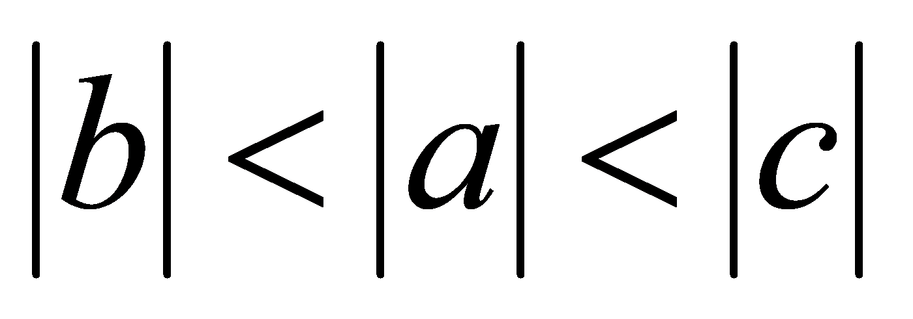
，然后再逐一比较大小即可；（2）根据，进行比较大小解题即可．
【详解】（1）解：把“”表示在数轴上为：
因为，，
∴ ，，，
，，，
故答案为：>，<，>；
（2）因为，，
所以，
故答案为：．
【点睛】首先在数轴上表示各数，然后再根据在数轴上表示的有理数，右边的数总比左边的数大用“<”连接即可．
题型六 利用数轴化简绝对值
【典例6】 （23-24六年级下·黑龙江绥化·期中）有理数在数轴上的位置如图所示，化简 ．
．
【答案】
【分析】本题考查了根据数轴上的点判断式子的正负、化简绝对值，由数轴得出，，从而得到，，，再根据绝对值的性质化简即可．
【详解】解：由数轴可得：，，
，，，
 ．
．
【变式1】（22-23七年级上·云南保山·期中）有理数在数轴上的位置如图所示，

化简： ．
．
【答案】
【分析】本题考查了数轴与有理数，绝对值化简，根据数轴可得，进而得到，，，，根据绝对值的性质即可化简求解，由数轴判断出 、、
、、 与的符号是解题的关键．
与的符号是解题的关键．
【详解】解：由数轴可得，，
∴，，，，
∴原式，
，
．
【变式2】（23-24七年级上·贵州毕节·阶段练习）已知有理数a，b，c在数轴上对应点的位置如图所示：

(1) 1，b 2， ______________2（填“”或“”）
______________2（填“”或“”）
(2)化简： ．
．
【答案】(1)，，
(2)
【分析】本题主要考查了根据数轴比较大小，化简绝对值，合并同类项，解题的关键是熟练掌握绝对值的意义；
（1）根据数轴上确定各个有理数的大小关系，然后比较即可；
（2）确定绝对值符号内代数式的正负情况再根据绝对值的性质去掉绝对值符号进行有理数运算即可求解．
【详解】（1）由数轴可知：，， 且
且 ，
，
 ，，
，，
故答案为：，，；
（2）由（1），得 ．
．
又，
所以，
所以

．
【变式3】（23-24六年级下·北京海淀·期中）有理数a，b，c在数轴上的位置如图所示．

(1)用“＞”“＜”或“＝”填空：
______0，______0，______0．
(2)化简：．
【答案】(1)，，
(2)
【分析】本题主要考查了利用数轴确定代数式的正负、绝对值的化简等知识点，掌握利用数轴确定代数式的正负成为解题的关键．
（1）先根据数轴取得a、b、c的大小关系，然后再确定所求代数式的正负即可；
（2）根据（1）所的代数式的正负取绝对值，然后再合并同类项即可．
【详解】（1）解：由数轴可得：，
则．
故答案为：，，．
（2）解：∵，
∴
．
题型七 数轴上的动点问题
【典例7】 （23-24七年级上·山西临汾·阶段练习）阅读与思考
如图，一个点从数轴上的原点开始，先向右移动3个单位长度，再向左移动5个单位长度，可以看出，终点表示的数是．参照图中所给的信息，完成填空：
已知A，B都是数轴上的点．

(1)若点A表示数．将点A向右移动5个单位长度至点 ．则点表示的数是________；
．则点表示的数是________；
(2)若点A表示数2，将点A先向左移动7个单位长度，再向右移动个单位长度至点 ，则点表示的数是________；
，则点表示的数是________；
(3)若将点B先向左移动3个单位长度，再向右移动6个单位长度，终点表示的数恰好是0，则点B所表示的数是________．
【答案】(1)2
(2)
(3)
【分析】本题主要考查了数轴上动点平移问题，解题关键是掌握数轴上点往右移几就加几，往左移几就减几，概括为“右加左减．
（1）根据数轴上的点向右平移加，向左平移减，可得点表示的数；
（2）根据数轴上的点向右平移加，向左平移减，可得点表示的数；
（3）根据数轴上的点向右平移加，向左平移减，可得B点表示的数．
【详解】（1）解：由题意得：，
∴点表示的数是2；
（2）解：由题意得：
∴点表示的数是；
（3）解：由题意得：0先向右移动3个单位长度，再向左移动6个单位长度得到点B
∴
∴点B所表示的数是
【变式1】（22-23七年级上·河南郑州·阶段练习）如图，已知点，，在数轴上表示的数分别是，，，回答下列问题：
(1)将点向右移动 个单位长度，此时点表示的数是多少；
个单位长度，此时点表示的数是多少；
(2)将点向左移动个单位长度，此时点表示的数是多少；
(3)移动，，三个点中的任意两个，能使三个点表示的数相等吗，你有几种移动方法，请写出来．
【答案】(1)1；
(2)；
(3)能，移动方法共有 种：方案一：将点向右移动
种：方案一：将点向右移动 个单位，点向右移动个单位，此时三个点表示的数均为；方案二：将点向右移动个单位，点向左移动个单位，此时三个点表示的数均为；方案三：将点向左移动个单位，点向左移动个单位，此时三个点表示的数均为．
个单位，点向右移动个单位，此时三个点表示的数均为；方案二：将点向右移动个单位，点向左移动个单位，此时三个点表示的数均为；方案三：将点向左移动个单位，点向左移动个单位，此时三个点表示的数均为．
【分析】
本题考查数轴的简单应用，理解点在数轴上的移动规律与点对应的数相应的变化是解题的关键．
（1）由数轴上的点的移动规律即可求解．
（2）由数轴上的点的移动规律即可求解．
（3）由数轴上的点的移动规律并分类讨论即可求解．
【详解】（1）
因为点表示的数是，所以将点向右移动个单位长度后，此时点所表示的数是；
（2）
因为点表示的数是，所以将点向左移动个单位长度后，此时点所表示的数是 ；
；
（3）
一共有种移动方法能使移动，，三个点中的任意两个点之后，三个点表示的数相等，且三种方案如下所述：
方案一：将点向右移动个单位，点向右移动个单位，此时三个点表示的数均为，符合题意；
方案二：将点向右移动个单位，点向左移动个单位，此时三个点表示的数均为，符合题意；
方案三：将点向左移动个单位，点向左移动个单位，此时三个点表示的数均为，符合题意；
综上所述：移动，，三个点中的任意两个，能使三个点表示的数相等，且符合题意的移动方法共有种．
【变式2】（23-24七年级上·贵州毕节·阶段练习）如图，一个点从数轴上的原点开始，先向左移动 到达点，再向右移动
到达点，再向右移动 到达点，然后再向右移动
到达点，然后再向右移动 到达点，数轴上一个单位长度表示
到达点，数轴上一个单位长度表示 ．
．

(1)请你在数轴上标出、、三点的位置，并填空：A表示的数为_______，B表示的数为_______，C表示的数为______．
(2)把点到点的距离记为 ，则
，则 _____
_____ ，
， ______；
______；
(3)若点从（1）中的位置沿数轴以每秒 匀速向右运动，经过多少秒使
匀速向右运动，经过多少秒使 ？
？
【答案】(1)
(2)5，8
(3)5或11
【分析】本题考查数轴上点的表示，数轴上两点间距离，数轴上动点问题．
（1）根据题意利用观察即可得到本题答案；
（2）根据题意利用两点间距离即可得到；
（3）分情况讨论当点A在点C的左侧时和当点A在点C的右侧时，分别列式即可得到本题答案．
【详解】（1）解：由题意得：A点对应的数为，B点对应的数为1，点C对应的数为4，
点A，B，C在数轴上表示如图：
A表示的数为，B表示的数为1，C表示的数为4，
故答案为：；
（2）解：∵A点对应的数为，B点对应的数为1，点C对应的数为4，
∴ ，，
，，
故答案为：5，8；
（3）解∶①当点A在点C的左侧时，设经过x秒后点A到点C的距离为3cm，
由题意得： ，
，
解得： ；
；
②当点A在点C的右侧时，
设经过x秒后点A到点C的距离为3cm，
由题意得： ，
，
解得： ，
，
综上，经过5或11秒后点A到点C的距离为3cm．
【变式3】（23-24七年级上·甘肃兰州·期末）如图，已知数轴上点 表示的数为6，
表示的数为6， 是数轴上在左侧的一点，且，两点间的距离为
是数轴上在左侧的一点，且，两点间的距离为 ．动点从点出发，以每秒6个单位长度的速度沿数轴向左匀速运动，设运动时间为
．动点从点出发，以每秒6个单位长度的速度沿数轴向左匀速运动，设运动时间为 秒．
秒．

(1)数轴上点表示的数是_______，点表示的数是_______ 用含的代数式表示
用含的代数式表示 ；
；
(2)动点 从点出发，以每秒个单位长度的速度沿数轴向左匀速运动，若点、同时出发．求：当点运动多少秒时，点与点相遇？
从点出发，以每秒个单位长度的速度沿数轴向左匀速运动，若点、同时出发．求：当点运动多少秒时，点与点相遇？
【答案】(1) ；
； ．
．
(2)当点运动 秒时，点与点相遇．
秒时，点与点相遇．
【分析】此题考查的知识点是两点间的距离及数轴，根据题意得出各线段之间的等量关系是解题关键．
（1）由题意知 ，，因为点在原点左边，从而得出数轴上点表示的数；动点从点出发沿数轴向左匀速运动，根据题意则得出点表示的数；
，，因为点在原点左边，从而得出数轴上点表示的数；动点从点出发沿数轴向左匀速运动，根据题意则得出点表示的数；
（2）设点运动秒时追上点，根据题意列方程，解得值．
【详解】（1）解：∵数轴上点A表示的数为6，
∴，
则，
又∵点B在原点左边，
∴数轴上点B所表示的数为；
点P运动t秒的长度为，
∵动点P从点A出发，以每秒6个单位长度的速度沿数轴向左匀速运动，
∴P所表示的数为：．
（2）设点运动秒时追上点，
根据题意，得，
解得： ，
，
答：当点运动秒时，点与点相遇．

一、单选题
1．（23-24七年级上·贵州黔东南·期中）下列四个选项中，所画数轴正确的是（ ）
A． B．
B．
C． D．
【答案】D
【分析】本题考查数轴定义，熟记数轴三要素：原点、单位长度和正方向，逐项验证即可得到答案，熟记构成数轴的三要素是解决问题的关键．
【详解】解：A、没有原点，所画数轴错误，不符合题意；
B、单位长度不统一，所画数轴错误，不符合题意；
C、数轴上的点表示的数必须是左边小、右边大，所画数轴错误，不符合题意；
D、所画数轴正确，符合题意；
故选：D．
2．（23-24七年级上·浙江宁波·期末）如图，数轴上被墨水遮盖的数可能是（ ）
A． B．
B． C．
C． D．
D．
【答案】D
【分析】本题考查数轴表示数的意义和方法，确定被墨迹所盖的数的取值范围是正确解答的前提．
【详解】解：由数轴上墨迹的位置可知，该数大于 ，且小于，
，且小于，
因此备选项中，只有选项D符合题意，
故选：D．
3．（2024·四川广元·中考真题）将在数轴上对应的点向右平移2个单位，则此时该点对应的数是（ ）

A． B．1 C． D．3
【答案】B
【分析】本题考查了数轴上的动点问题，正确理解有理数所表示的点左右移动后得到的点所表示的数是解题的关键．将在数轴上对应的点向右平移2个单位，在数轴上找到这个点，即得这个点所表示的数．
【详解】根据题意：数轴上所对应的点向右平移2个单位，则此时该点对应的数是1．
故选B．
4．（2024·河北唐山·一模）如图，点 ，
， 对应的数分别为
对应的数分别为 ，
， ，对于结论：①
，对于结论：① ；②；③
；②；③ ．下列说法正确的是（ ）
．下列说法正确的是（ ）
A．仅①②对 B．仅①③对 C．仅②对 D．①②③都对
【答案】D
【分析】本题考查了数轴，熟悉掌握从数轴上提取信息是解题的关键；
根据数轴得到， ，，逐一判断即可．
，，逐一判断即可．
【详解】解：由题意可得：，，，
①，正确；
②，正确；
③，正确；
故选：D．
5．（23-24七年级上·内蒙古鄂尔多斯·期末）如图，一条数轴上有点A、B、C，其中点A、B表示的数分别是 ，10，现以点C为折点，将数轴向右对折，若点A落在射线
，10，现以点C为折点，将数轴向右对折，若点A落在射线 上且到点B的距离为6，则C点表示的数是（ ）
上且到点B的距离为6，则C点表示的数是（ ）

A．1 B． C．1或
C．1或 D．1或
D．1或
【答案】C
【分析】本题考查了数轴，分类讨论思想是解题的关键．先根据两点间的距离公式求出点A落在对应点表示的数，在利用中点公式求出C点表示的数．
【详解】设 是点的对应点，由题意可知点是和的中点
是点的对应点，由题意可知点是和的中点
当点在的右侧，，表示的数为，
那么C表示的数为：，
当点在的左侧，，表示的数为，
那么C表示的数为：，
故选：C．
二、填空题
6．（23-24七年级上·湖南长沙·期中）点 在数轴上对应的数分别为
在数轴上对应的数分别为 和10，则两点间的距离为
和10，则两点间的距离为
【答案】
【分析】求数轴上两点间的距离，用较大数减去较小数即可．
本题主要考查了求数轴上两点间的距离的方法，知道用较大数减较小数是解题的关键．
【详解】解：根据题意得：
,
故答案为：．
7．（23-24七年级上·广东广州·期中）如图，分别写出数轴上点A、B、C、D表示的数：
A： B： C： D： ．
【答案】 


【分析】根据数轴上点A、B、C、D的位置，得出点分别表示的数．
此题主要考查了数轴上的点表示的数，熟练掌握数轴上的点表示的数的特点，是解决问题的关键．
【详解】点A在原点的右侧，且到原点2个单位，因此点A所表示的数为：2；
点B在原点的左侧，且到原点4个单位，因此点B所表示的数为：；
点C在原点的左侧，且到原点大约2.5个单位，因此点C所表示的数为：；
点D在原点的左侧，且到原点大约0.8个单位，因此点D所表示的数为：；
故答案为：2，，，．
8．（23-24七年级上·山东滨州·期末）已知有理数 在数轴上的位置如图所示，则
在数轴上的位置如图所示，则 从大到小的顺序为 ．
从大到小的顺序为 ．

【答案】
【分析】本题考查了在数轴上表示有理数，利用数轴比较有理数的大小，先根据数轴，得出的情况，即可作答．
【详解】解：依题意，在数轴上的情况如下：

∴，
则从大到小的顺序为，
故答案为：．
9．（23-24六年级上·北京石景山·期中）已知点P在数轴上，如果将点P向左移动3个单位长度，再向右移动6个单位长度，终点表示的数是，那么点P所表示的数是 ．
【答案】
【分析】本题考查了数轴的相关知识．反向移动到点P即可．
【详解】∵将点P向左移动3个单位长度，再向右移动6个单位长度，终点表示的数是，
∴将向右移动3个单位长度，再向左移动6个单位长度，终点表示的数是点P
∴点P表示的数为，
故答案为：．
10．（23-24七年级上·陕西榆林·期中）如图，已知直径为1个单位长度的圆形纸片上的点与数轴上表示的点重合，若将该圆形纸片沿数轴滚动一周（无滑动）后点与数轴上的点重合，则点表示的数为 .（ 取3.14）
取3.14）

【答案】或
【分析】本题考查了数轴，计算圆的周长为π，分在的左边与右边两种情形讨论即可求解．
【详解】∵圆的周长为，
∴向左滚动一周，则点表示的数为；
向右滚动一周，则点表示的数为；
故答案为：或．
三、解答题
11．（23-24七年级上·湖南衡阳·期中）已知下列各有理数：，0， ，
， ．
．
(1)画出数轴，在数轴上标出这些数表示的点；
(2)用“<”号把这些数连接起来．
【答案】(1)见解析
(2)
【分析】本题考查了在数轴上表示数和有理数大小比较，能准确地在数轴上表示出所给的各个数是解题的关键．
（1）在数轴上直接表示出各个数即可；
（2）根据（1）中数轴上表示的数，结合数轴右边的数比左边的数大即可比较．
【详解】（1）解：，，
 在数轴上标出，0，，，如图所示：
在数轴上标出，0，，，如图所示：
（2）解：由（1）中数轴可得： ．
．
12．（23-24七年级上·云南临沧·期末）一只蚂蚁从原点 出发，它先向右爬了2个单位长度到达点，再向右爬了3个单位长度到达点，然后向左爬了9个单位长度到达点．
出发，它先向右爬了2个单位长度到达点，再向右爬了3个单位长度到达点，然后向左爬了9个单位长度到达点．
(1)画数轴表示点 所在的位置，并写出三点表示的数；
所在的位置，并写出三点表示的数；
(2)根据点在数轴上的位置回答：蚂蚁实际上是从原点出发，向什么方向爬行了几个单位长度？
【答案】(1)数轴见解析；点表示2，点表示5，点表示
(2)向左爬行了4个单位长度
【分析】本题考查了在数轴上表示有理数；
（1）将蚂蚁的运动过程在数轴上表示出来就能找出，，三点表示的数；
（2）根据点表示的数即可得出结论．
【详解】（1）解：如图所示，点表示2，点表示5，点表示
（2）∵点C表示，
∴蚂蚁实际上是从原点出发，向左爬行了4个单位长度．
13．（23-24七年级上·湖南娄底·阶段练习）如图，有理数a，b，c在数轴上，且 ．
．

(1)判断正负（用“<”或“>”填空）： ______0；
______0； ______0；
______0； ______0．
______0．
(2)化简： ．
．
【答案】(1)<；=；>
(2)0
【分析】（1）本题考查数轴，由a、b、c在数轴上的位置，即可判断和求解；
（2）本题考查绝对值的概念，由绝对值的概念即可化简．
【详解】（1）解：∵ ，
，
∴ ，
，
∵，，
∴ ，，
，，
故答案为：<，=，>；
（2）解：∵，，，
∴
 ．
．
14．（23-24七年级上·河南安阳·阶段练习）操作探究：已知在纸面上有一数轴（如图所示），

操作一：
(1)折叠纸面，使表示的1点与 表示的点重合，则表示的点与表示 的点重合；
表示的点重合，则表示的点与表示 的点重合；
操作二：
(2)折叠纸面，使表示的点与表示3的点重合，回答以下问题：
①表示5的点与表示 的点重合；
②若数轴上A、B两点之间距离为12，（A在B的左侧），且A、B两点经折叠后重合，求A、B两点表示的数是多少．
【答案】(1)3
(2)①
②A、B两点表示的数分别是 、
、
【分析】本题考查了数轴上点的对称，通过点的对称，发现对称点的规律，
（1） 与重合，可以发现与互为相反数，因此表示的点与
与重合，可以发现与互为相反数，因此表示的点与 表示的点重合；
表示的点重合；
（2）①表示的点与表示的点重合，则折痕点为，因此 表示的点与数表示的点重合；
表示的点与数表示的点重合；
②由①知折痕点为，且A、B两点之间距离为，则B点表示，A表示 ．
．
【详解】（1）解：∵与重合；
∴折痕点为原点；
∴表示的点与表示的点重合．
故答案为．
（2）①∵由表示的点与表示的点重合；
∴可确定对称点是表示的点；
∴表示的点与数表示的点重合．
故答案为．
②由题意可得，A、B两点距离对称点的距离为 ；
；
∵对称点是表示的点；
∴A、B两点表示的数分别是、．
15．（23-24七年级上·辽宁葫芦岛·期中）根据给出的数轴及已知条件，解答下面的问题：

(1)已知点 在数轴位置如图所示，则到点的距离为4的点表示的数是______．
在数轴位置如图所示，则到点的距离为4的点表示的数是______．
(2)若将数轴折叠，使得点与点重合，则与点重合的点表示的数是______．若此数轴上 两点之间的距离为2023（
两点之间的距离为2023（ 在
在 的左侧）．且当点与点重合时，点与点也恰好重合，则点表示的数是______，点表示的数是______．
的左侧）．且当点与点重合时，点与点也恰好重合，则点表示的数是______，点表示的数是______．
(3) 在数轴上，到三点距离之和为12，求点对应数轴上的有理数．
在数轴上，到三点距离之和为12，求点对应数轴上的有理数．
【答案】(1)或6
(2)1， ，
，
(3)3或
【分析】本题考查了数轴、列代数式，解决本题的关键是数轴上两点之间的距离公式．
（1）根据数轴上两点之间的距离即可求解；
（2）根据对称的性质可得对称点的坐标；
（3）根据数轴上两点之间的距离，分情况进行讨论，求解即可．
【详解】（1）解：观察数轴可知：点A、B、C表示的数分别是2，，
与点A的距离为4的点表示的数是 或．
或．
故答案为：6或 ；
；
（2）解：∵将数轴折叠，使得A点与C点重合，
∴与自身对称的点表示的数为：，
∴与点B重合的点表示的数是：；
∴M表示的数是：，
N表示的数是：．
故答案为：1，，；
（3）解：当在 之间，，
之间，，
不可能等于12，
当在点右侧时，，
解得，
∴点对应的有理数是3，
当在点左侧时，，
解得，
∴点对应的有理数是，
∴点对应的有理数是3或．
16．（23-24七年级上·河南平顶山·期末）综合与探究
数轴可以将数与形完美结合．请借助数轴，结合具体情境解答下列问题：
(1)平移运动
一机器人从原点O开始，第1次向左跳1个单位，紧接着第2次向右跳2个单位，第3次向左跳3个单位，第4次向右跳4个单位，…，依此规律跳，当它跳完5次时，落在数轴上的点表示的数是 ；当它跳完2024次时，落在数轴上的点表示的数是 ．
(2)翻折变换
①若折叠数轴所在纸条，表示的点与表示3的点重合，则表示5的点与表示 的点重合．
②若数轴上D、E两点经折叠后重合，两点之间的距离为2024（D在E的左侧，且折痕与①折痕相同），则D点表示 ，E点表示 ．
③一条数轴上有点M、N、P，其中点M、N表示的数分别是 、8，现以点P为折点，将数轴向右对折，若点M对应的点
、8，现以点P为折点，将数轴向右对折，若点M对应的点 落在点N的右边，并且线段
落在点N的右边，并且线段 的长度为3，请直接写出点P表示的数 ．
的长度为3，请直接写出点P表示的数 ．
【答案】(1)；1012
(2)①；②；1013；③
【分析】本题考查图形变化的规律，熟知折叠后能重合的两个点到折点的距离相等是解题的关键．
（1）根据机器人的运动方式，依次求出每次跳完落在数轴上时所表示的数，发现规律即可解决问题．
（2）根据折叠后重合的点到折点的距离相等即可解决问题．
【详解】（1）解：根据机器人的运动方式可知，
它跳完第1次时，落在数轴上的点表示的数是：；
它跳完第2次时，落在数轴上的点表示的数是：1；
它跳完第3次时，落在数轴上的点表示的数是：；
它跳完第4次时，落在数轴上的点表示的数是：2；
它跳完第5次时，落在数轴上的点表示的数是：；
它跳完第6次时，落在数轴上的点表示的数是：3；
…，
由此可见，它跳完第 次时，落在数轴上的点表示的数是n，
次时，落在数轴上的点表示的数是n，
它跳完第 次时，落在数轴上的点表示的数是；
次时，落在数轴上的点表示的数是；
当，即 时，
时，
，
所以它跳完第5次时，落在数轴上的点表示的数是；
当，即 时，
时，
可得它跳完第2024次时，落在数轴上的点表示的数是1012；
故答案为： ，1012．
（2）①由表示的点与表示3的点重合可知，
 ，
，
则折点所表示的数为1．
因为，
所以表示5的点与表示的点重合．
故答案为：．
②因为折痕与①的折痕相同，
所以这次折叠的折点所表示的数也为1．
又因为，
所以点D表示的数为，点E表示的数为1013．
故答案为：，1013．
③由折叠可知，
，
因为点M、N表示的数分别是、8，
所以 ．
又因为点落在点N的右边，并且线段的长度为3，
所以．
因为，，
所以点P表示的数为．
故答案为：．